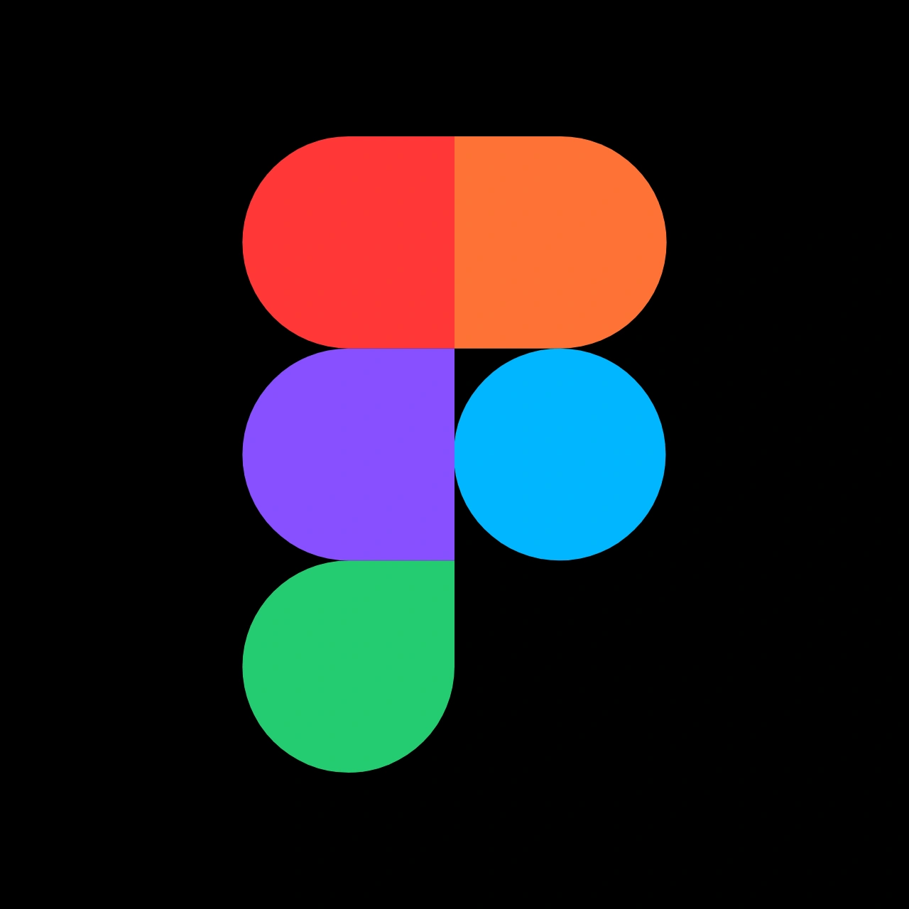
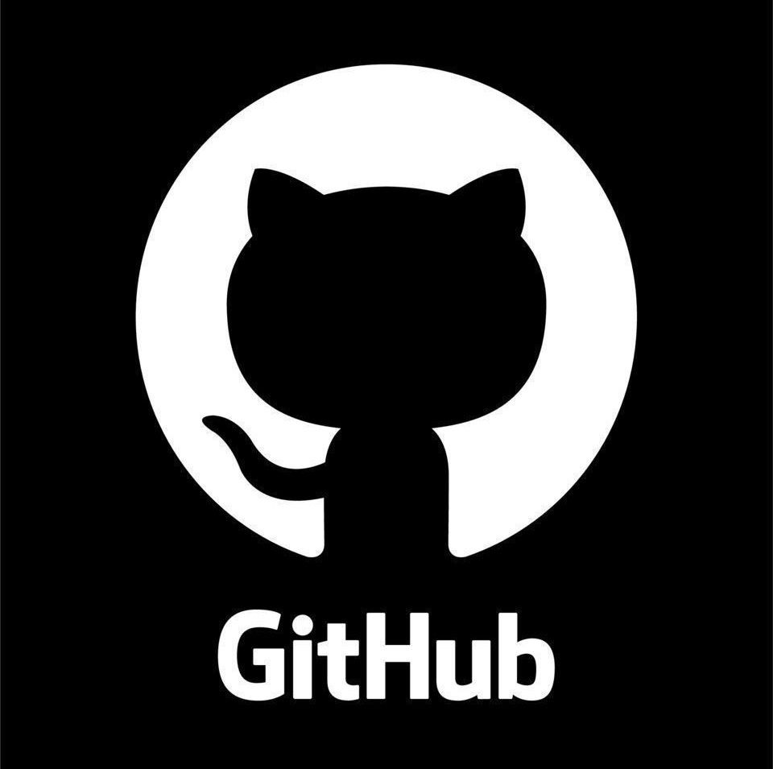
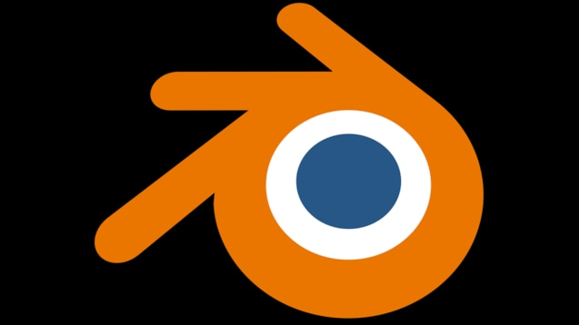
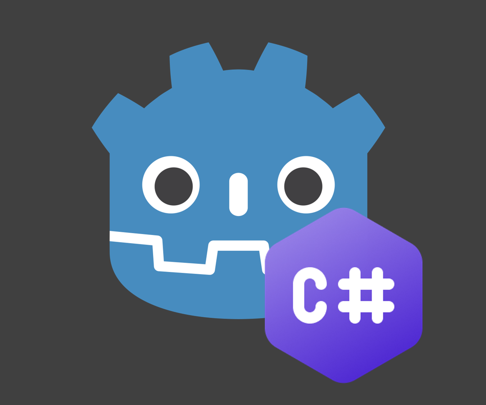
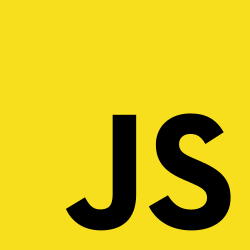

Compétences
Maîtrisées
HTML
VS Code

Figma
Word
Excel
En cours d'apprentissage

GitHub

Blender

Godot

Les jeux vidéo ont été ma première porte d'entrée et mon envie d'entrer dans le monde de l'informatique. J'ai fais mes premiers pas dans l'informatique dans la formation La Toile a l'EM Lyon en développant des sites web et des applications, et je aussi crée des projets personnels.
Depuis toujours les jeux vidéo occupent une place importante dans ma vie. Ils m'ont donné envie de comprendre comment fonctionnent les jeux, les applications et les sites web.
J'ai par la suite découvert le développement web grâce à ma formation à la Toile. J'aime apprendre de nouvelles technologies et construire mes propres projets.
Je recherche une alternance afin de continuer à progresser dans ma futur école a l'IPI Lyon et acquérir davantage d'expérience professionnelle.





À partir d'octobre 2026, j'intégrerai l'IPI Lyon afin de préparer une formation de Technicienne Support Informatique. Je recherche une entreprise qui me permettra de développer mes compétences techniques, d'accompagner les utilisateurs et d'acquérir une expérience professionnelle concrète.
Capable d'expliquer clairement des notions techniques et d'échanger efficacement avec les utilisateurs.
J'apprécie collaborer avec d'autres personnes et partager mes connaissances pour atteindre un objectif commun.
Je sais garder mon calme face aux problèmes et rechercher des solutions de manière méthodique.
J'aime découvrir de nouvelles technologies et apprendre continuellement pour développer mes compétences.
Je suis capable de gérer plusieurs tâches tout en restant rigoureuse et attentive aux détails.
Je m'adapte facilement à de nouveaux outils, environnements et méthodes de travail.
N'hésitez pas à me contacter pour échanger ou découvrir davantage mes projets.